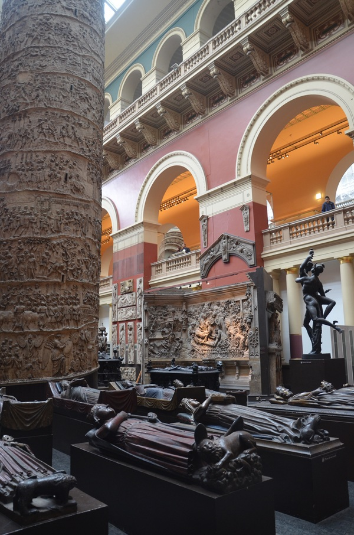
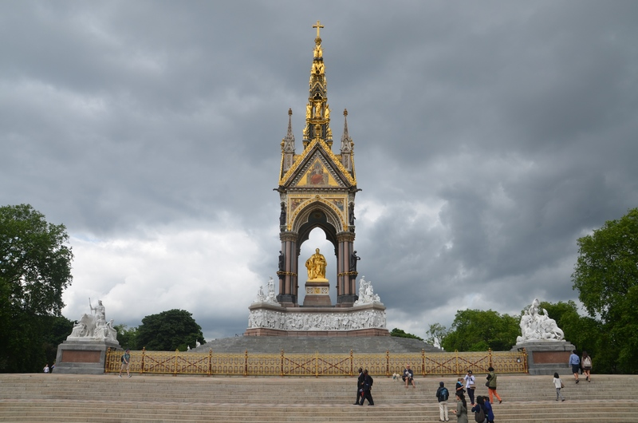
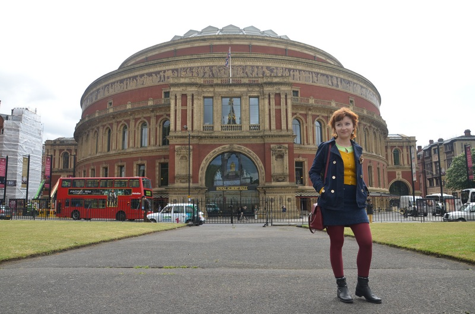
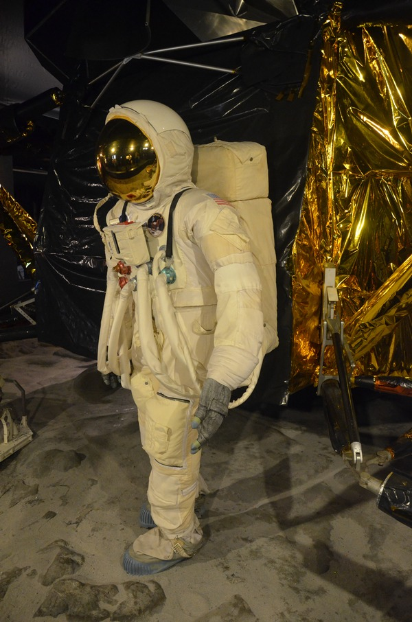
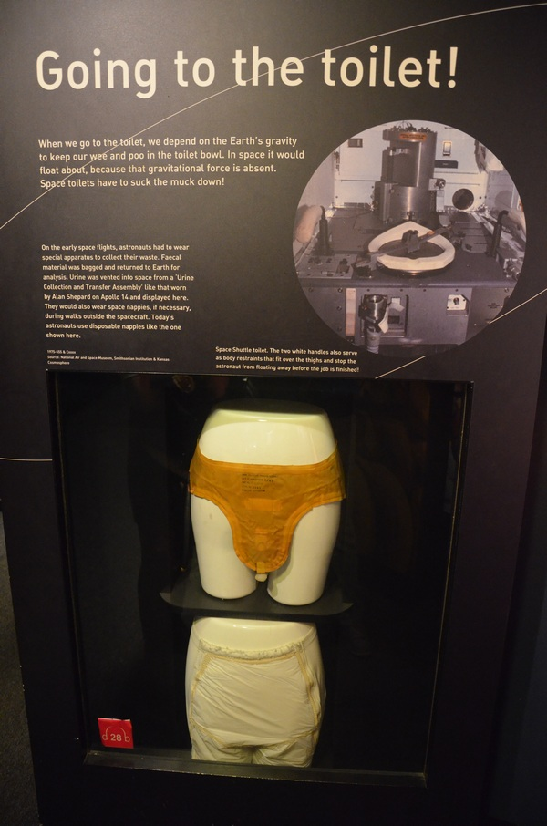
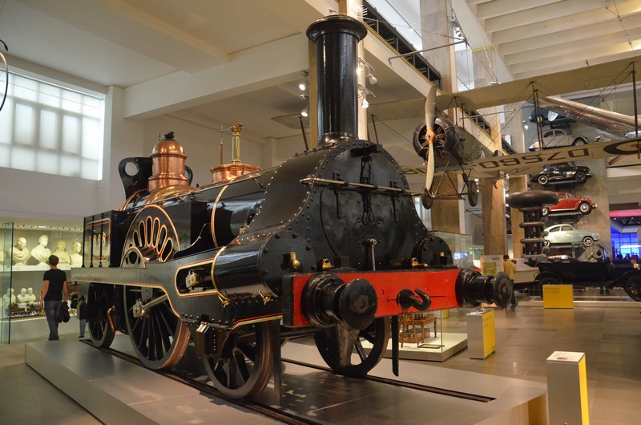
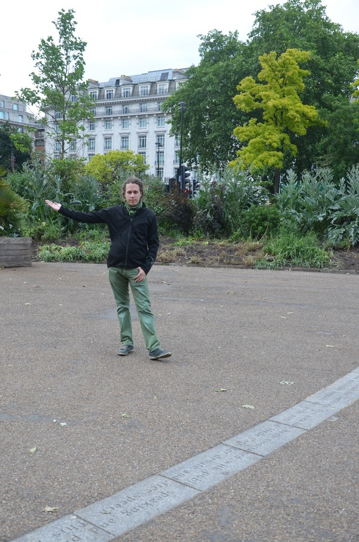
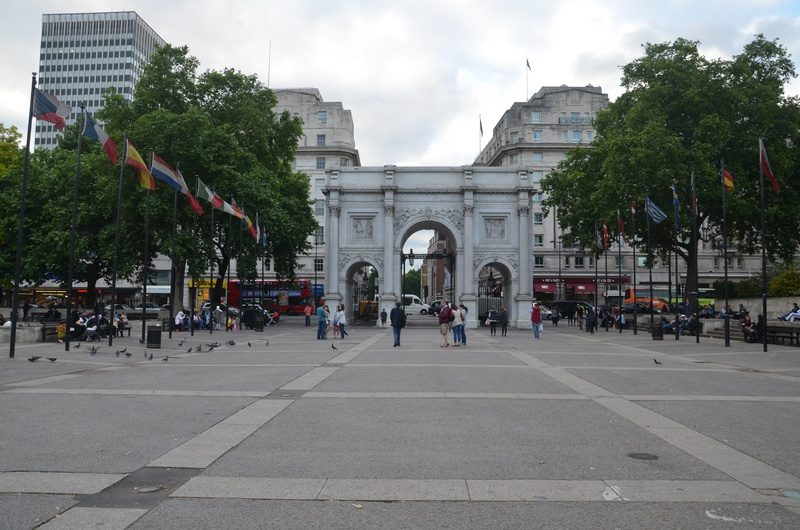

Tak trochu z obavy před dalšími vrtochy londýnského počasí jsme se rozhodli strávit středeční den v teple jednoho z nejnavštěvovanějších londýnských muzejí - Victoria & Albert Museum. Bylo to koneckonců i coby kamenem od našeho hotelu, takže by bylo jistě ostudné tam nezavítat. Victoria & Albert Museum ukrývá největší světové sbírky uměleckých řemesel - nádobí, sklo, nábytek, keramiku, šperky a mnoho mnoho dalšího. Nejprve jsme si prošli zajímavou expozici o vývoji módy, která zahrnovala opravdu pestrou sbírku od historického oblečení přes barevné šedesátkové šatičky až po tvorbu současných módních návrhářů - Vivienne Westwood, Alexandra McQueena a řady dalších. Zaujala mě také archaická čísla módního časopisu Vogue či neméně archaické modely od Diora :-). Poté jsme už pokračovali k obrovské sbírce asijského umění. Najdete tu opravdu všechno možné - sošky, keramiku, látky, nádobí. Je toho tolik, že se opravdu nedá stihnout vše. Východní umění nás zaujalo nejvíce. Pak jsme ještě v rychlosti prolítli část věnovanou evropské středověké tvorbě a nenechali jsme si ujít ani sbírku Raffaelových maleb, které muzeu zapůjčila sama královna O:-). Nakonec jsme se přemístili ještě do šestého patra, kde se nachází expozice nábytku a keramiky. Opět vás, zejména u keramiky, zaskočí to množství. Řada obrovských prosklených vitrín, zaplněných až po strop vázami a dalším křehkým nádobím ze všech koutů světa.

Victoria & Albert Museum
Victoria & Albert Museum nás zabavilo skutečně na celé dopoledne. Po včerejším úspěchu jsme se rozhodli vyhledat si nějakou příjemnou restauraci v okolí opět přes Trip Adviser. Vydali jsme se tedy podle mapy nahoru k Hyde Parku. Restauraci se nám sice najít nepodařilo, zato jsme objevili překrásný Albert Memorial a hned naproti slavnou koncertní síň Royal Alber Hall, kde vystupovali mimo jiné The Beatles /jak jinak :)/, Jimi Hendrix, Frank Sinatra nebo třeba Adele.

Albert Memorial

Royal Albert Hall
Když jsme tedy u Hyde Parku nepochodili, vydali jsme se hledat nějakou restauraci na náhodu. Nakonec jsme zakotvili v pochybném japonském podniku Little Japan. Navzdory ne příliš příznivým recenzím z Trip Adviseru a chudému interiéru bylo jídlo překvapivě docela dobré, se spoustou zeleniny, takže se skoro nedalo sníst. Cestou zpět k muzeu jsme samozřejmě narazili na původně hledanou restauraci :D - v mapě totiž byla zaznačená na opačném konci ulice. Tu du dum tum…
Náladu nám brzy zvedla návštěva Science Museum. Kdybych vám měla doporučit jedno jediné londýnské muzeum, které si rozhodně nesmíte nechat ujít, bylo by to právě toto, nacházející se hned vedle Victoria & Albert. Strávili jsme v něm celé odpoledne až do zavíračky a pořád jsme neměli dost. Muzeum má 5 pater a najdete tu skutečně všechno od parních strojů přes létání do vesmíru až po přírodní vědy. Všechno podané úžasně zábavnou a interaktivní formou. Co jsme během naší návštěvy stihli my: expozici o létání do vesmíru (plnou zajímavých informací, které vás vždycky strašně zajímaly, ale neodvážili jste se zeptat, třeba… jak chodí kosmonauti na záchod :D!), historii parních strojů, vývoj informačních technologií a expozici o materiálech současnosti i budoucnosti.

Science Museum

A jak chodí kosmonauti na záchod?
Viděli jsme také Foucaltovo kyvadlo, první model rentgenu či originální kabinu Apolla 10! Líbil se nám i koutek se zajímavostmi o lidském těle, našem mozku, paměti atd. Já osobně jsem byla snad vůbec nejvíc nadšená z expozice “Making the modern world”, v níž se nacházely vitríny plné různých inovativních výrobků z té které dekády 20. století. Jednalo se samozřejmě o předměty běžné denní potřeby, a to nejen technického rázu, ale třeba také časopisy, kosmetické výrobky, domácí spotřebiče nebo hračky. Jak šel čas blíže do současnosti, začala jsem spoustu z nich důvěrně poznávat a uvědomila jsem si, kolik věcí z našeho dětství už je vlastně dneska “retro” - třeba takové obyčejné kazety do kazeťáku :D! Dost času jsem tu strávila s nosem přilepeným na skle :D.

Science Museum
Ve dvou nejvyšších patrech se nachází také výstava o historii lékařství, kterou už jsme bohužel nestihli, ale myslím, že i tak jsme toho nakonec viděli opravdu hodně. Na závěr dne jsme si nechali procházku Hyde Parkem se zastávkou u Princess Diana Memorial Fountain. Je to moc příjemné a klidné místo, kde se dá odpočinout od londýnského shonu. I přesto se mi Hyde Park ze všech londýnských parků líbil nejmíň. Ne že by nebyl hezký - jen je zkrátka asi nejméně zajímavý. Je ale pravda, že jsme viděli pouze jeho východní část - ta západní, s Kensington gardens, je určitě hezčí.
Princess Diana Memorial Fountain
Hyde Park jsme opustili přímo u Speaker’s Corner. Překvapilo mě, že to je vlastně jen půlkruh s nápisem na chodníku. Žádné pódium, židle pro posluchače, prostě nic. Ve středu večer tam tak či tak nebyla ani noha :D.

Speaker’s Corner
Přímo za Speaker’s Corner se nachází Marble Arch - mramorový oblouk inspirovaný triumfálním Konstantinovým obloukem v Římě. Hned za ním už začíná proslulá nákupní třída Oxford Street. Přestože jsme tedy nákupy neměli na programu, neodolali jsme a aspoň se po ní prošli :-). Nejprve jsme se ale vybavili nějakým dobrým jídlem v Sainsbury’s.

Marble Arch
Oxford Street není tak nóbl jako třeba Champs Elysée. Vlastně mi nepřišla vůbec nóbl. Najdete tam vesměs stejné obchodní řetězce, jako u nás. A pak samozřejmě obří Primark, asi nejslavnější obchod na světě :D. Takže dohromady nic vzrušujícího, a přesto tam byla větší tlačenice a koncentrace lidí, než u těch nejslavnějších londýnských památek. Ze zvědavosti jsme vlezli do Selfridges - tam nám to ale naopak přišlo luxusní až moc, tak jsme vylezli zase ven, abychom si před obří výlohou Louise Vuitona mohli sníst své slaďoučké donutky s jahodovou polevou. Bylo to skoro jako ve Snídani u Tiffanyho :D! A ty donutky ze Sainsbury’s byly nejlepší, jaké jsem kdy jedla :-)!
Z Oxford Street už jsme pak jeli rovnou do hotelu. Na večer jsme si koupili pivko Guiness, ale nijak zvlášť nám nechutnalo - nemělo prostě říz! Po návratu z Anglie jsme si opravdu začali vážit našeho dobrého (a levného :D!) českého piva. Než jsme se nadáli, byl před námi poslední den naší dovolené. A jak se říká, na konec patří to nejlepší. Ale o tom zase někdy jindy :-)…
Komentáře (1)
Komentáře jsou uzavřené.